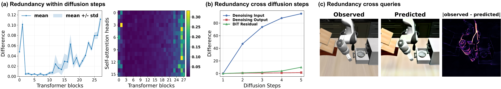
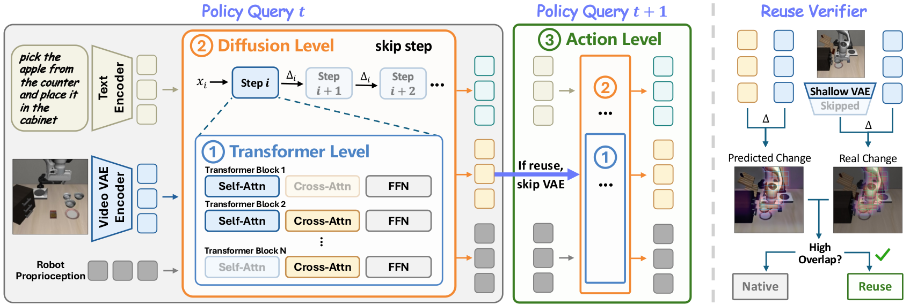
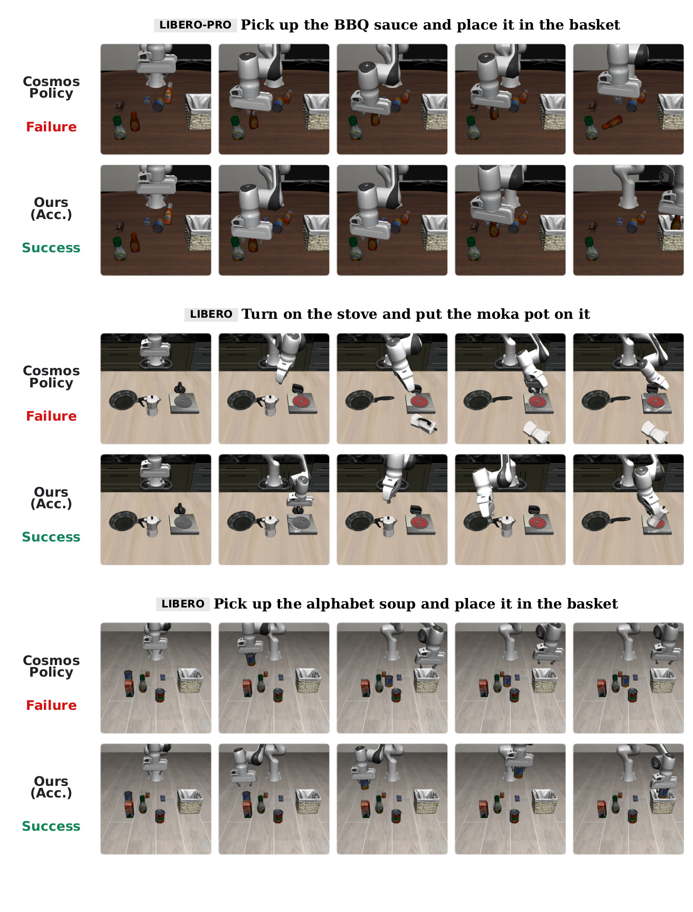
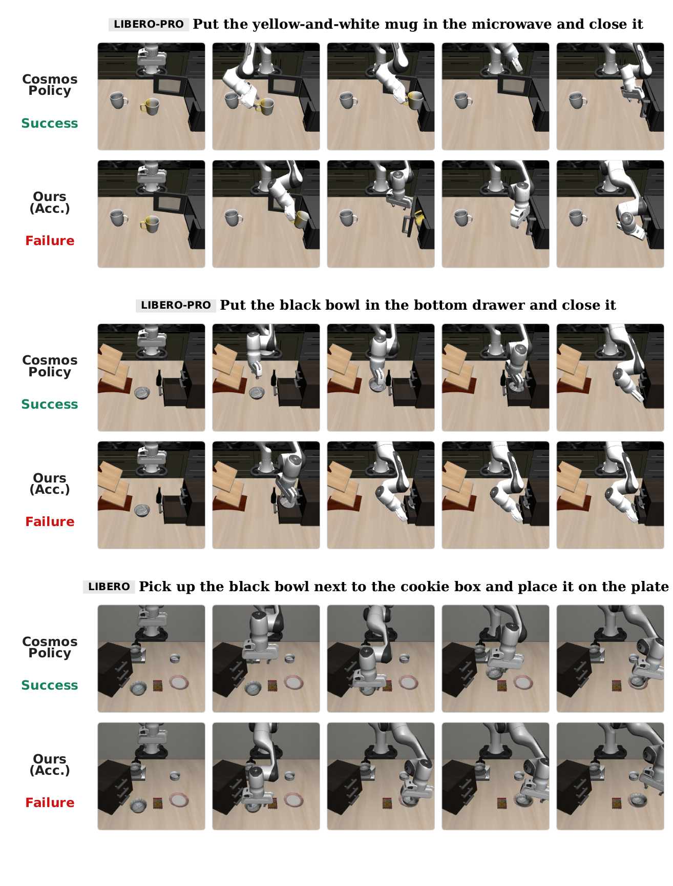

100.00%relative performance
1.00×speedup
Training-free inference acceleration for World Action Models
1VaLuE Lab, Peking University 2University of Technology Sydney 3University of Liverpool
Acceleration at a glance
By adjusting acceleration strength across three levels, MARS enables flexible efficiency–performance trade-offs.
World Action Models (WAMs) are emerging as a promising alternative to Vision-Language-Action (VLA) models. Existing VLA acceleration methods primarily reduce VLM computation and are not directly applicable to diffusion-based WAMs. Moreover, WAM acceleration methods typically target redundancy along only a single computational axis, overlooking substantial redundancy across the full pipeline, resulting in either limited speedups or drops in success rate. To address these limitations, we propose MARS, a training-free multi-level acceleration framework that systematically exploits distinct sources of redundancy at three computational levels: (1) across Transformer blocks, we selectively skip redundant attention components; (2) across diffusion denoising steps, we perform action-aware routing to adaptively skip diffusion steps; (3) across consecutive action chunks, we reuse future visual tokens, thereby skipping the VAE encoding. These mechanisms are synergistically integrated in a plug-and-play manner. Extensive experiments across multiple benchmarks and base models demonstrate that our method achieves a superior efficiency-performance trade-off, delivering up to a 4.00×/3.94× speedup in LIBERO/LIBERO-PRO, 2.10× in RoboCasa, and consistent speedups on real-world tasks, while maintaining comparable success rates.
Profiling the WAM inference pipeline reveals structured redundancy at three distinct computational levels.

Redundancy across multiple levels of WAM inference. Diagnostics are measured in the LIBERO simulation.
Non-Uniform Attention
Many cross-attention blocks and self-attention heads induce only small output changes, while a smaller subset remains influential. This non-uniform importance motivates selective component-wise attention skipping.
Residual Stability
Diffusion step inputs evolve substantially across denoising steps, whereas the predicted outputs and DiT residuals remain comparatively stable. This motivates direct one-step prediction and residual-reuse multi-step sampling.
Speculative Visual Dynamics
Spatial alignment between predicted latent changes and actual shallow-feature changes reveals cross-chunk visual redundancy and provides a lightweight signal for safe visual-token reuse.
Our method targets redundancy within diffusion steps, across denoising steps, and across consecutive action chunks.

Within diffusion steps
Skips low-impact self- and cross-attention computation while preserving components important for action generation.
Across denoising steps
Routes each query between direct one-step generation and residual-reuse multi-step sampling according to motion granularity.
Across action chunks
Uses shallow VAE features to verify temporal consistency before reusing predicted future visual tokens.
End-to-end acceleration on Cosmos Policy, measured with matched three-seed evaluation.
| Method | Success Rate (%, ↑) / Speedup (↑) | Success Rate (↑) |
Speedup (↑) | Latency (↓) | FLOPs (↓) | |||
|---|---|---|---|---|---|---|---|---|
| Goal | Object | Spatial | Long | |||||
| Cosmos Policy | 98.20 / 1.00 | 99.87 / 1.00 | 97.47 / 1.00 | 96.67 / 1.00 | 98.05% | 1.00× | 1.4001 s | 100.00% |
| + DiCache | 98.07 / 1.70 | 99.87 / 1.66 | 97.80 / 1.67 | 97.27 / 1.72 | 98.25% | 1.69× | 0.8273 s | 48.12% |
| + C3Cache* | 97.80 / 2.19 | 99.00 / 2.16 | 97.53 / 2.25 | 94.47 / 2.30 | 97.20% | 2.24× | 0.6256 s | 33.18% |
| + X-Cache* | 97.87 / 1.11 | 99.67 / 1.17 | 97.47 / 1.12 | 97.00 / 1.21 | 98.00% | 1.17× | 1.2017 s | 80.20% |
| + Ours (Speed) | 96.73 / 3.89 | 99.07 / 4.08 | 97.60 / 3.87 | 96.27 / 4.07 | 97.42% | 4.00× | 0.3498 s | 18.39% |
| + Ours (Acc.) | 98.47 / 3.06 | 99.60 / 3.29 | 97.80 / 3.10 | 96.60 / 3.19 | 98.12% | 3.17× | 0.4414 s | 19.19% |
| Method | Success Rate (%, ↑) / Speedup (↑) | Success Rate (↑) |
Speedup (↑) | Latency (↓) | FLOPs (↓) | |||
|---|---|---|---|---|---|---|---|---|
| Goal | Object | Spatial | Long | |||||
| Cosmos Policy | 43.67 / 1.00 | 46.13 / 1.00 | 47.40 / 1.00 | 45.33 / 1.00 | 45.63% | 1.00× | 1.4044 s | 100.00% |
| + DiCache | 44.13 / 1.67 | 46.27 / 1.66 | 47.73 / 1.63 | 45.07 / 1.73 | 45.80% | 1.68× | 0.8347 s | 50.32% |
| + C3Cache* | 42.80 / 2.22 | 45.53 / 2.20 | 47.53 / 2.28 | 42.60 / 2.30 | 44.62% | 2.26× | 0.6222 s | 32.86% |
| + X-Cache* | 43.73 / 1.17 | 46.20 / 1.22 | 47.80 / 1.17 | 44.33 / 1.26 | 45.52% | 1.22× | 1.1549 s | 75.55% |
| + Ours (Speed) | 44.20 / 3.91 | 45.67 / 3.86 | 47.33 / 3.96 | 44.93 / 3.99 | 45.53% | 3.94× | 0.3564 s | 18.80% |
| + Ours (Acc.) | 43.67 / 3.05 | 47.00 / 3.08 | 47.60 / 3.06 | 44.60 / 3.11 | 45.72% | 3.08× | 0.4558 s | 19.05% |
| Method | S.R. (↑) | Speedup (↑) | Latency (↓) | FLOPs (↓) |
|---|---|---|---|---|
| Cosmos Policy | 66.69% | 1.00× | 2.2958 s | 100.00% |
| + DiCache | 66.47% | 1.50× | 1.5305 s | 49.99% |
| + C3Cache* | 65.00% | 1.81× | 1.2653 s | 33.64% |
| + X-Cache* | 66.37% | 1.20× | 1.9202 s | 72.86% |
| + Falcon | 66.47% | 1.21× | 1.8968 s | 74.56% |
| + Ours | 66.94% | 2.10× | 1.0911 s | 22.50% |
With Different Base Models
Our method transfers beyond Cosmos Policy to additional WAM and VLA backbones without retraining.
LingBot-VA can only be evaluated on Long because only its Long checkpoint is publicly available.
| Method | Success Rate (%, ↑) / Speedup (↑) | Success Rate (↑) | Speedup (↑) | Latency (↓) | |||
|---|---|---|---|---|---|---|---|
| Goal | Object | Spatial | Long | ||||
| Fast-WAM | 95.87 / 1.00 | 99.40 / 1.00 | 97.13 / 1.00 | 93.93 / 1.00 | 96.58% | 1.00× | 0.5365 s |
| + Ours | 96.07 / 3.43 | 99.00 / 3.25 | 96.93 / 3.43 | 93.20 / 2.93 | 96.30% | 3.17× | 0.1693 s |
| LingBot-VA | — | — | — | 97.40 / 1.00 | 97.40% | 1.00× | 13.4105 s |
| + Ours | — | — | — | 98.13 / 2.88 | 98.13% | 2.88× | 4.6558 s |
| π0.5 | 97.80 / 1.00 | 98.67 / 1.00 | 98.40 / 1.00 | 92.93 / 1.00 | 96.95% | 1.00× | 0.1462 s |
| + Ours | 97.87 / 1.29 | 99.07 / 1.30 | 98.47 / 1.33 | 92.27 / 1.24 | 96.92% | 1.28× | 0.1145 s |


Paper and BibTeX will be added upon release.
Follow the repository for updates →